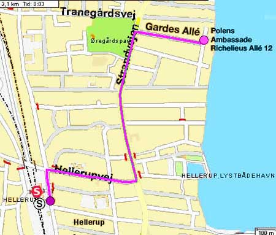

| Demo | 11. Juni 2005 |
 |
|
| dunsts parade starter på Hellerup station kl. 14 og bevæger sig derefter ad Hellerupvej og Strandvejen på Polens ambassade, hvor vi vil stå til kl. 16. Priden er anmeldt til politiet og der er sendt brev til ambassadøren. |
|